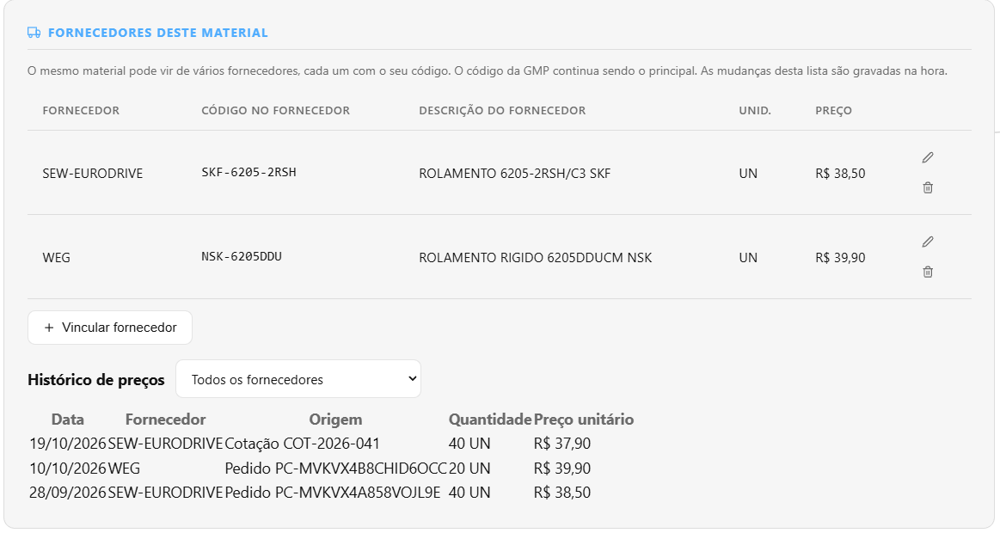
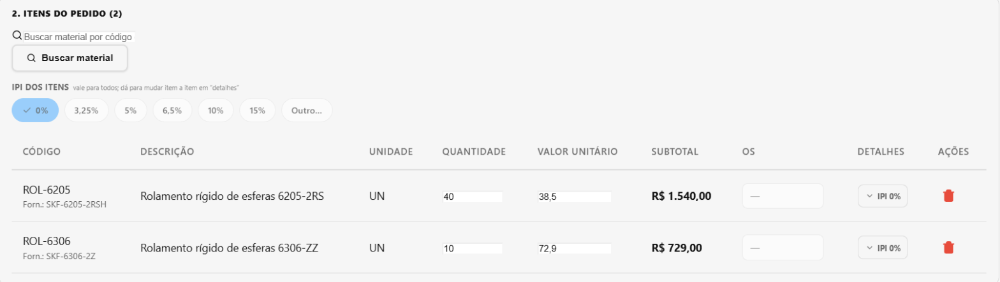
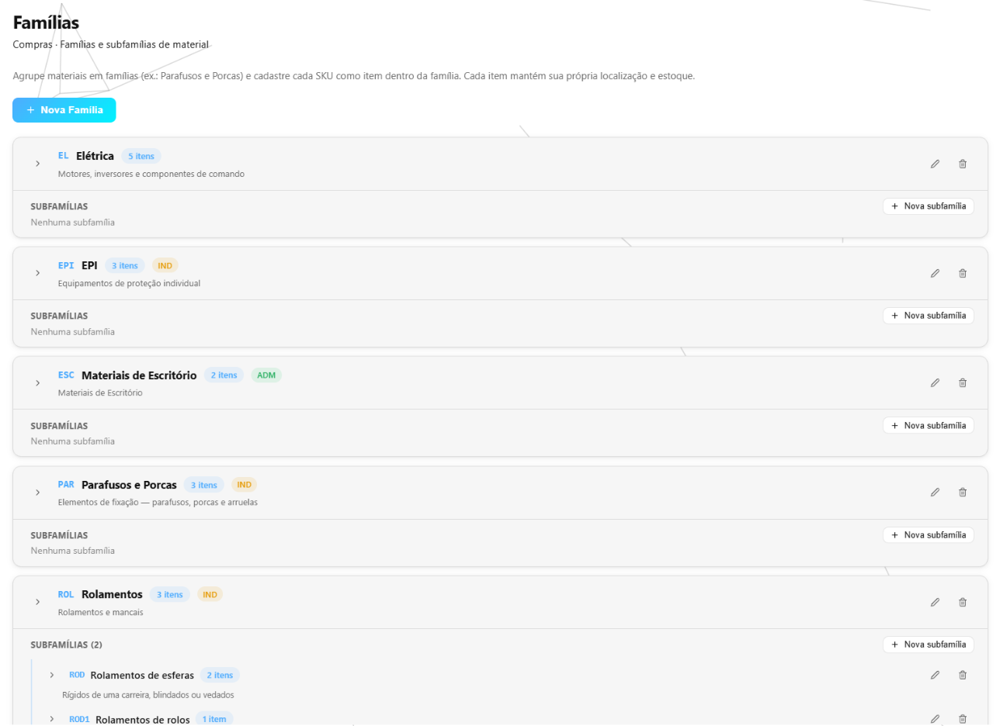
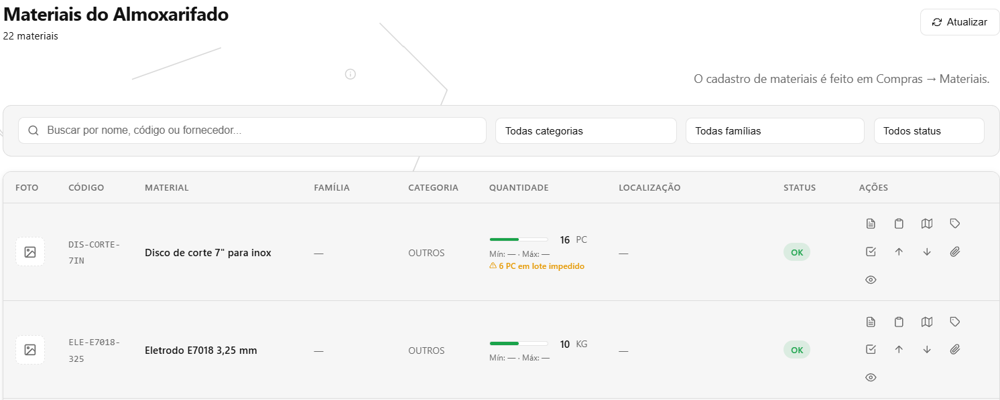
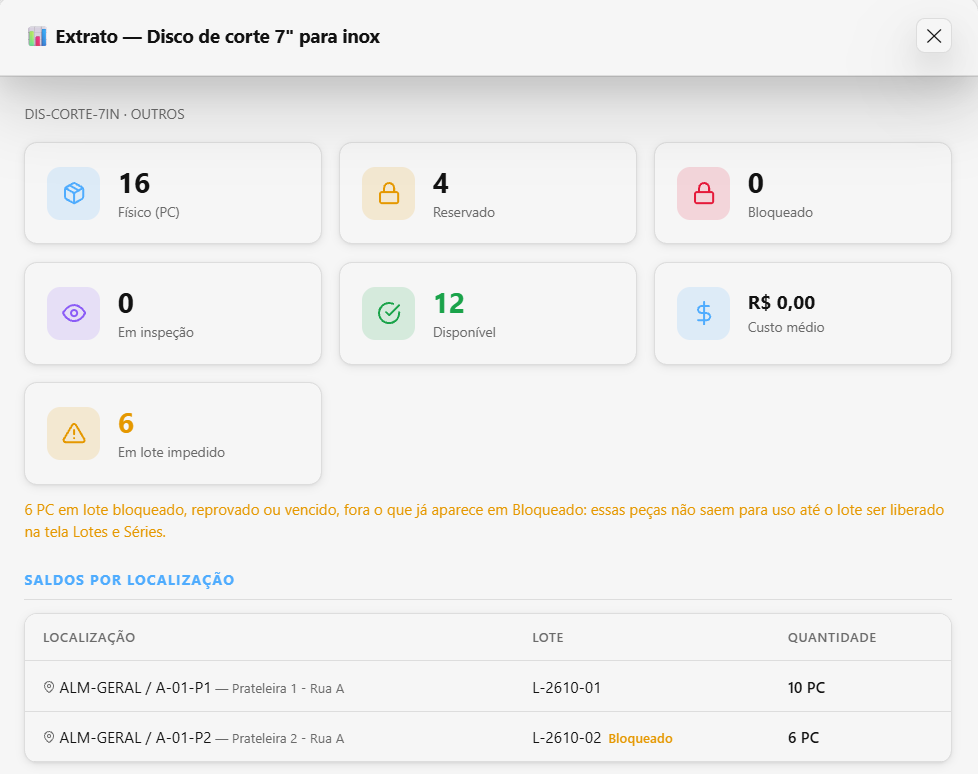
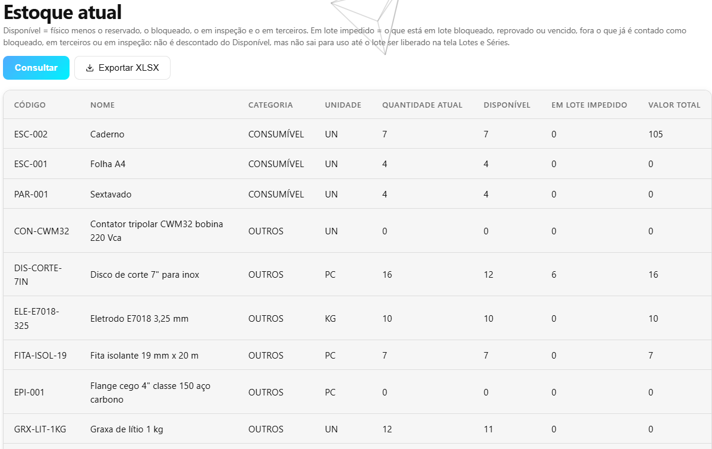
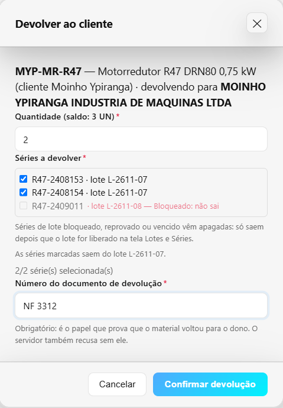

O que foi feito no sistema nesta semana
Semana de 08/11 a 14/11/2026 · CRM GMP Industriais
No Compras, cada material passou a ter a lista dos seus fornecedores, com o código de cada um no pedido de compra e o histórico de preços, e as famílias, categorias e tipos de material passaram a ser cadastrados lá. No Almoxarifado, peça de lote bloqueado, reprovado ou vencido deixou de sair por engano e de ficar guardada para quem espera, e as telas e relatórios passaram a mostrar quanto do estoque está nessa situação. No total, 29h de trabalho, a maior parte no Almoxarifado, no cuidado com os lotes que não podem sair.
O que você já pode ver na tela
Um material, vários fornecedores — cada um com o seu código e o seu preço
Onde: Compras → Materiais, lápis de um material, parte Fornecedores deste material; e Compras → Pedidos de Compra, ao editar um pedido.
Antes: o mesmo material vem de vários fornecedores (o inox, de uns cinco), e cada um usa um código diferente. O cadastro tinha um campo só de "fornecedor principal", digitado à mão. O pedido de compra saía só com o código da GMP, e o fornecedor tinha de descobrir qual era o item dele. Para saber por quanto cada um já tinha vendido, era preciso abrir pedido por pedido.
Agora: o material lista cada fornecedor com o código, a descrição e o preço dele, e logo abaixo o Histórico de preços: data, fornecedor, cotação ou pedido de onde veio, quantidade e preço, do mais recente para o mais antigo. Na cotação e no pedido de compra, embaixo do código da GMP, aparece o código do fornecedor escolhido — também no pedido impresso que vai para ele. Isso evita material duplicado só porque veio de outro fornecedor, pedido que o fornecedor não reconhece, e negociação feita sem saber o preço que já foi pago.


Os cadastros ligados a compras passaram para o Compras
Onde: menu do Compras, Famílias, Categorias e Tipos de Material.
Antes: o Compras pediu que o Almoxarifado não faça nenhum cadastro: ele só recebe, libera e dá saída. Mas as famílias, as categorias e os tipos de material ainda eram cadastrados no Almoxarifado. E o tipo de material era digitado à mão, cada um de um jeito ("Consumível", "CONSUMIVEL", "consumivel").
Agora: o menu do Compras tem as três telas, com os mesmos botões de antes, para quem cadastra material. No Almoxarifado as mesmas listas continuam aparecendo, só para consulta, com a frase dizendo onde se cadastra. No cadastro do material, o Tipo de Material passou a ser escolhido de uma lista, como a categoria. A prateleira que só aceita material consumível passou a reconhecer o tipo mesmo com acento ou letra maiúscula diferente.

As telas mostram quanto do estoque está em lote que não pode sair
Onde: Almoxarifado → Materiais (a lista e o extrato do material) e Almoxarifado → Relatórios.
Antes: um material tinha 16 peças: 10 num lote bom e 6 num lote bloqueado (o certificado do fornecedor ainda não chegou). A tela mostrava só o Disponível. O almoxarife tentava reservar e o sistema recusava, sem que nenhuma tela tivesse avisado. Para saber qual lote estava preso, era preciso sair e procurar em outra tela.
Agora: a lista de Materiais mostra, embaixo da quantidade, "6 PC em lote impedido". O extrato do material mostra o cartão Em lote impedido e, na tabela de saldos, ao lado de cada lote, "Bloqueado", "Reprovado" ou "Vencido em 12/11/2026". Os relatórios Estoque atual e Saldos comprometidos ganharam a coluna "Em lote impedido", o Saldo por lote ganhou a coluna "Situação", e a Fila de separação diz quanto do disponível está nessa situação. Na separação e na entrega, a lista "Sai de" mostra o lote bloqueado apagado, com o motivo, e não deixa escolher. É como uma etiqueta "não usar" na caixa, visível de longe, em vez de só no papel guardado na gaveta.



Devolver ao cliente material com número de série
Onde: Almoxarifado → Materiais de clientes, botão Devolver ao cliente.
Antes: a janela recusava material de cliente com número de série ou com lote: não havia como devolver pelo sistema.
Agora: a janela lista as séries em estoque para marcar, diz de qual lote as marcadas saem, e a série de lote bloqueado vem apagada, com o motivo, sem poder ser marcada. Material com lote ganhou a escolha do lote. Ao abrir, a janela também avisa quando a localização do material está bloqueada.

O que foi feito por baixo — e por que importa
Parte do trabalho não muda a aparência das telas: é o “motor” que faz as contas e guarda as informações. Quando ele erra, o erro aparece depois, em forma de estoque que não bate ou de material que some. Esta semana, no motor:
Quem espera o material só recebe o que pode sair — e recebe assim que o lote é liberado
O problema: chegava uma nota com 4 peças num lote bloqueado. O sistema guardava essas 4 para a requisição que esperava, ela ficava "Totalmente Reservada" e o solicitante recebia "Chegou material da sua requisição". Na hora de separar, nada podia sair. O mesmo acontecia na reserva feita à mão, na inspeção, na ordem de serviço e ao desfazer a entrada de uma nota. E quando o lote era liberado, nada acontecia: a primeira requisição aprovada depois levava as peças, passando na frente de quem esperava.
O que foi feito: a nota, a inspeção, a não conformidade, a ordem de serviço e a reserva manual passaram a guardar só o que pode sair. Quando o lote é liberado (certificado anexado, situação de volta para Ativo, vencimento liberado ou validade corrigida), as peças vão para quem esperava, na ordem da fila, o solicitante recebe o aviso e a tela Lotes e Séries diz quanto foi reservado. As telas Inspeções e Não Conformidades avisam quando as peças aprovadas continuam num lote impedido.
O que isso evita: requisição que parece pronta e não está, aviso falso de "chegou", e a fila invertida na hora em que o lote é liberado.
Peça bloqueada não sai por engano, e cada saída fica no lote certo
O problema: uma peça voltava de uma obra com suspeita e era mandada para a quarentena, mas o sistema só sabia que havia "1 bloqueada" no material, sem saber de qual lote. A entrega podia levar justamente essa peça, e quem escolhia o lote à mão conseguia separar as 4 peças de um lote que tinha 1 em quarentena. Nas listas de números de série, as séries de lote bloqueado podiam ser marcadas, e a saída avulsa com o lote em branco baixava a peça sem dizer de qual lote era — o saldo por lote ficava negativo.
O que foi feito: o bloqueio passou a guardar o lote, e a janela Desbloquear material pergunta de qual lote se libera. A entrega e a separação deixam de fora a peça em quarentena, reprovada, em inspeção ou com terceiros, e dizem quantas podem sair. A janela de entrega não começa mais por um lote que ficou bloqueado depois da separação. Na entrega, na saída avulsa e na devolução ao cliente, as séries de lote impedido vêm apagadas, e a saída guarda o lote das séries marcadas.
O que isso evita: peça suspeita indo para a produção, e saldo por lote que não fecha com o que está na prateleira.
Também foram feitos: tudo o que se digita ou cola em qualquer formulário passou a aparecer e ser gravado em MAIÚSCULO, com acento (ficam de fora e-mail, senha, site, lote e número de série), e as buscas continuam achando os cadastros antigos em minúsculo.
Tempo gasto
| O que foi feito | Tempo |
|---|---|
| Textos dos formulários em maiúsculo | 1h15 |
| Cadastro de material no Compras: fornecedores, códigos, histórico de preços, famílias, categorias e tipos | 8h15 |
| Almoxarifado: lotes bloqueados, reprovados ou vencidos (saída, reservas, telas e relatórios) | 19h30 |
| Total | 29h |
Tempo medido pelo registro do trabalho feito na semana.
Quer conferir?
- Abra Compras → Materiais, clique no lápis de um material e desça até Fornecedores deste material: clique em Vincular fornecedor, escolha um fornecedor, informe o código dele e o preço e salve. Logo abaixo aparece o Histórico de preços.
- Abra Compras → Pedidos de compra → Novo, escolha esse fornecedor e adicione o material: na coluna Código aparece "Forn.:" com o código dele. Abra o PDF do pedido: o código do fornecedor aparece embaixo do código da GMP.
- Abra Compras → Famílias, Compras → Categorias e Compras → Tipos de Material. Depois abra Almoxarifado → Configurações → Famílias: a mesma lista, só para consulta.
- Abra Almoxarifado → Materiais e procure um material com um lote bloqueado: embaixo da quantidade aparece "em lote impedido". Clique em Extrato (o primeiro ícone da linha): o número aparece ao lado do Disponível, e a tabela de saldos diz qual lote está bloqueado.
- Abra Almoxarifado → Relatórios → Estoque atual: a coluna "Em lote impedido" vem logo depois do Disponível.
- Abra Almoxarifado → Lotes e Séries, escolha um lote bloqueado de um material que alguém está esperando e mude a situação para Ativo: a tela diz quantas peças foram guardadas para quem esperava.
- Abra Almoxarifado → Materiais de clientes e clique em Devolver num material com número de série: a janela lista as séries para marcar e diz de qual lote elas saem.
- Em qualquer formulário, digite ou cole um texto em minúsculo: ele aparece em maiúsculo.